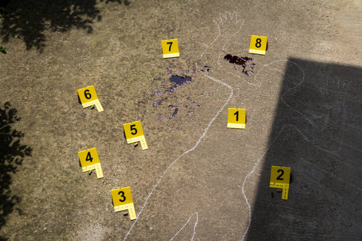
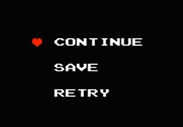
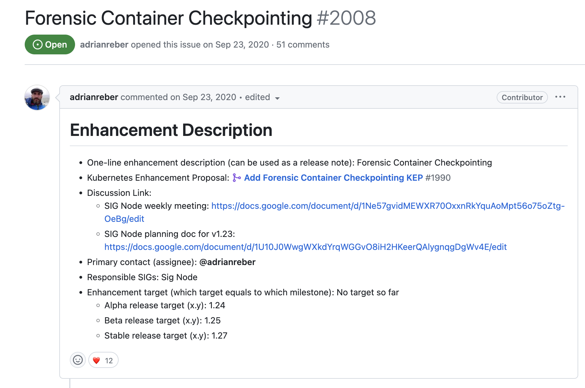

Digital forensics with
container checkpointing
Daniel Simionato and Javier Martínez
About us
Daniel Simionato and Javier Martínez
What is Digital Forensics?
It's the process of...
- retrieving
- analizing
- preserving
electronic data as evidence of a criminal activity
DFIR
Digital Forensics
+
Incident Response
Criminal activity
- Cryptojacking
- Malware
- Ransomware
- ...

Container Checkpointing
- Save the current container state
- Snapshot
- Backup

How checkpointing is useful for DFIR?
Investigate a container
and retrieve criminal evidence
while the attacker is unaware
Checkpoint contents
- Archive of all changed files (rootfs-diffs.tar)
- Images (of processes, memory, file descriptors...)
- Metadata
- Bind mounts info
- Stats&logs
It all started with CRIU

- Initial POC on 2011
- Started from Virtuozzo
- 1.0 in Nov. 2013 (Linux 3.11)
- Checkpoint/Restore In Userspace
- Multiple use cases
Demo: checkpointing with Podman
Container checkpoint demo
Checkpointing in Kubernetes
Graduated to alpha in Kubernetes v1.25 (#2008)

Currently only checkpointing, exposed at Kubelet level
/checkpoint CAPI call
Checkpointing in Kubernetes
Requirements
Kubernetes checkpoint output
A tar file, containing
Kubernetes checkpoint demo
checkpoint analysis & crit demo
Checkpointing in Kubernetes
- The copy is created without the container knowing
- No processes are stopped
Restoring
- Outside of k8s: Podman
- Inside of k8s: build an image from the checkpoint
CRIU limitations
Not everything can be checkpointed:
- Devices
- Open files from unmounted fs
- Traced processes
Kubernetes checkpointing Limitations
- CRI-O has to be enabled
- v3.16
- Containerd
Other usages
- Backups
- Recovery from failure
- Container migration